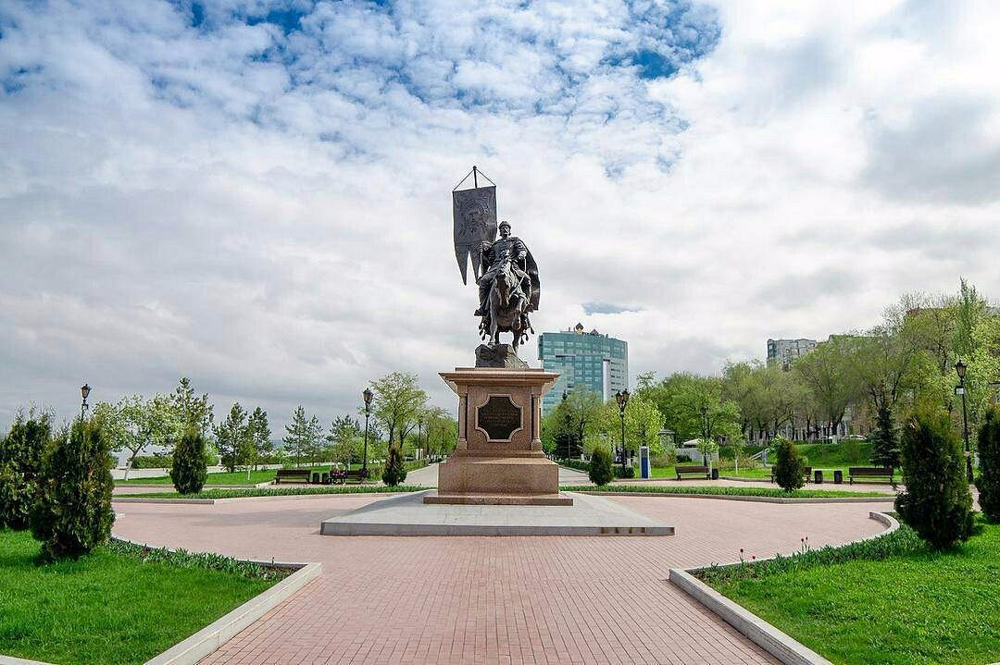
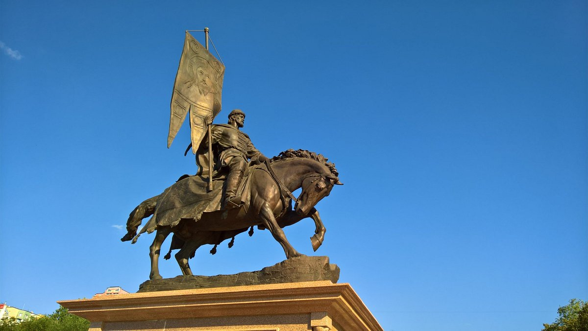
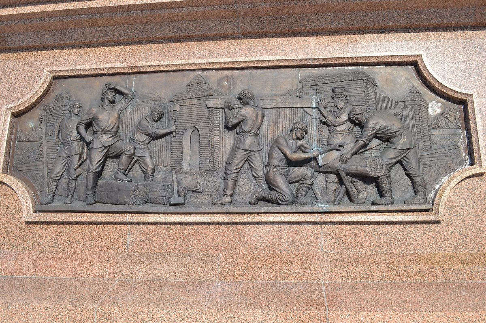
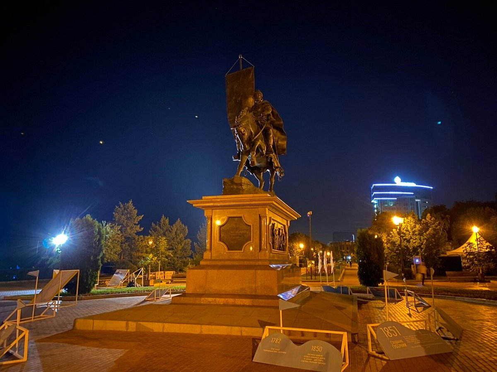
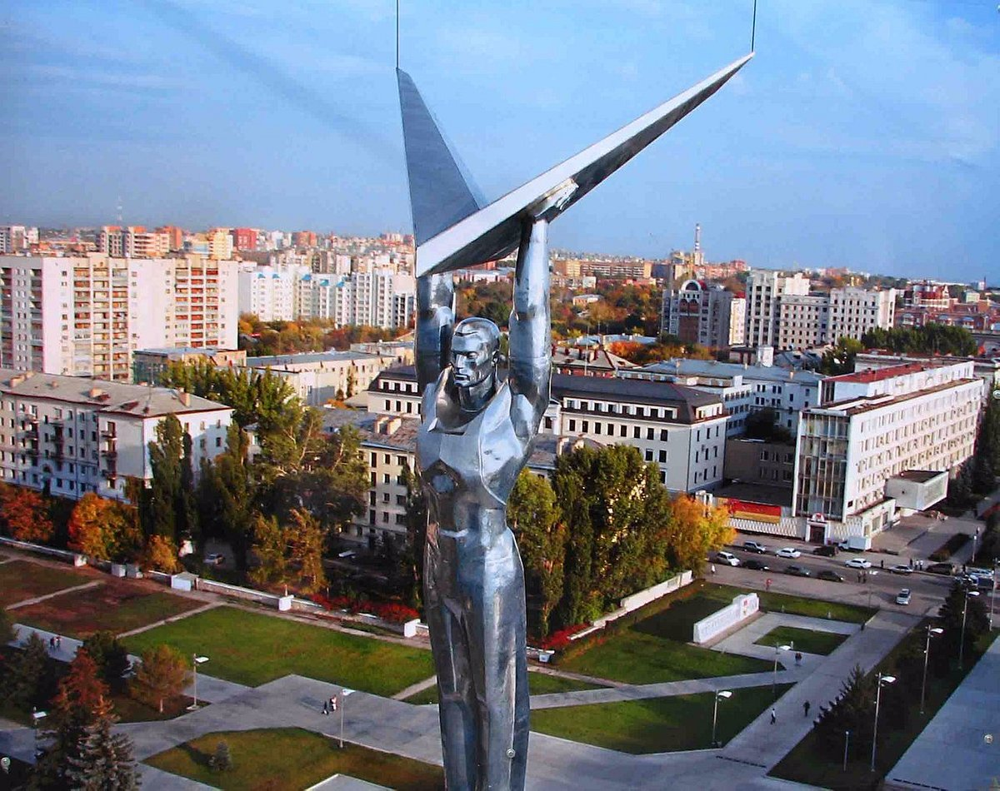
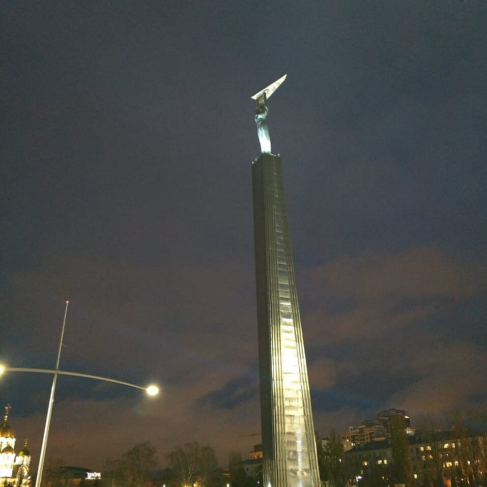
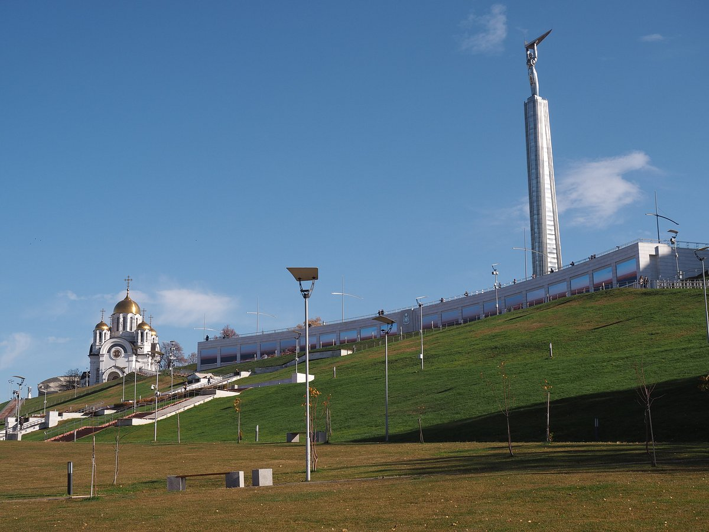
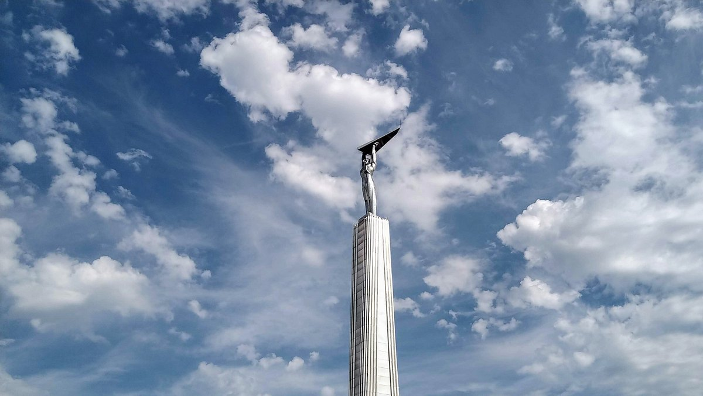

Памятник князю Григорию Засекину (1550-1597гг приблизительно) был установлен в 2014г на набережной в Самаре. Князь являлся главным основателем города и первым воеводой.
   Монумент Славы – один из самых узнаваемых памятников Самары, его символ и безусловная доминанта одноимённой площади. Памятник был открыт в 1971 году как напоминание об огромном вкладе рабочих авиапромышленности Куйбышева-Самары в победу в Великой Отечественной войне: в военные годы в Куйбышеве выпускались знаменитые штурмовики ИЛ-2, «летающие танки». Кстати, средства на создание памятника тоже собирали рабочие: каждый работник завода или фабрики скинулся по рублю. 40-метровую стелу венчает внушительная фигура, которая держит в руках стилизованные крылья. Фигура – труженик завода, крылья – намёк на авиацию. В народе монумент обзавёлся прозванием «Паниковский с гусём», по имени одного из центральных персонажей романа Ильфа и Петрова «Золотой телёнок».
   